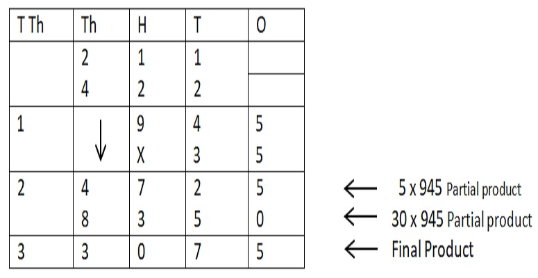
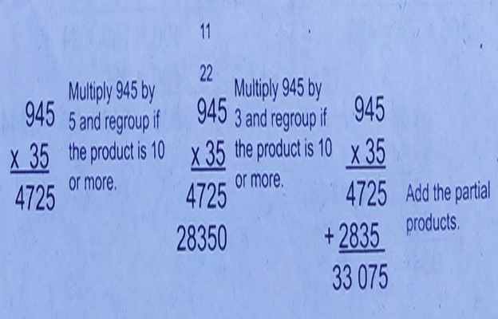
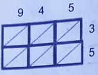
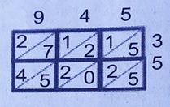
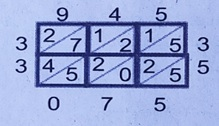
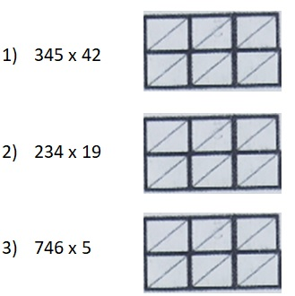

EXPLORE
There are 945 members from Barangay Masikap. If each member contributed 35 packs of noodles for the victims of typhoon Glenda, how many packs of noodles were collected?
How do we solve the problem?
To solve the problem, you need to multiply 945 by 35.
The number sentence is 35 x 945 = N
a. Using the place value chart
b. Using the short method
c. Using the lattice method, draw a 3 by 2 rectangle and position the factors as shown below.
Multiply each digit above by each digit on the side. Write the digits product shown:
Add down the numbers along the diagonals. Regroup if necessary.
The answer, read counter clockwise, is 33 075.
Get Moving
Multiply using the lattice method.
Apply Your Skills
Answer the following exercises.
1. Add 432 to the product of 318 and 12. What is the sum?
2. What is 383 subtracted from the product of 357 and 28?
3. If the numbers to be multiplied are 318 and 36, what is the product?
4. What is 273 added to the product of 47 and 38?
5. Multiply the largest 3-digit by the smallest 2-digit number. What is the product?
Read and solve the following:
1. A school librarian receives Php436 a day. How much does she earn in a month excluding Sundays assuming that there are 30days in a month?
2. A farmer has 98 chickens. He has 98 times as many ducks as he has chickens. How many ducks does he have?
3. Ingrid Faye receives a daily allowance of Php 185. How much does she receive in 30 days?